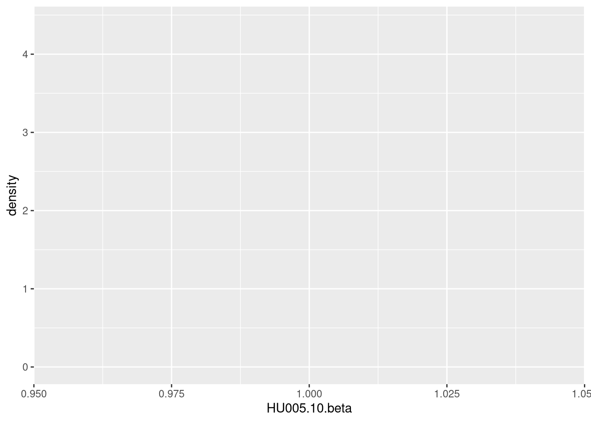

Last updated: 2025-10-03
Checks: 7 0
Knit directory: methyl_nano_cf/
This reproducible R Markdown analysis was created with workflowr (version 1.7.1). The Checks tab describes the reproducibility checks that were applied when the results were created. The Past versions tab lists the development history.
Great! Since the R Markdown file has been committed to the Git repository, you know the exact version of the code that produced these results.
Great job! The global environment was empty. Objects defined in the global environment can affect the analysis in your R Markdown file in unknown ways. For reproduciblity it’s best to always run the code in an empty environment.
The command set.seed(20250606) was run prior to running
the code in the R Markdown file. Setting a seed ensures that any results
that rely on randomness, e.g. subsampling or permutations, are
reproducible.
Great job! Recording the operating system, R version, and package versions is critical for reproducibility.
Nice! There were no cached chunks for this analysis, so you can be confident that you successfully produced the results during this run.
Great job! Using relative paths to the files within your workflowr project makes it easier to run your code on other machines.
Great! You are using Git for version control. Tracking code development and connecting the code version to the results is critical for reproducibility.
The results in this page were generated with repository version 4aacc2b. See the Past versions tab to see a history of the changes made to the R Markdown and HTML files.
Note that you need to be careful to ensure that all relevant files for
the analysis have been committed to Git prior to generating the results
(you can use wflow_publish or
wflow_git_commit). workflowr only checks the R Markdown
file, but you know if there are other scripts or data files that it
depends on. Below is the status of the Git repository when the results
were generated:
Ignored files:
Ignored: .Rhistory
Ignored: .Rproj.user/
Ignored: renv.lock
Ignored: renv/
Unstaged changes:
Modified: .Rprofile
Modified: .gitignore
Modified: analysis/joinAlphaAndBeta.Rmd
Modified: analysis/plotAlphaAndBeta.Rmd
Note that any generated files, e.g. HTML, png, CSS, etc., are not included in this status report because it is ok for generated content to have uncommitted changes.
These are the previous versions of the repository in which changes were
made to the R Markdown (analysis/bedFileBetas.Rmd) and HTML
(docs/bedFileBetas.html) files. If you’ve configured a
remote Git repository (see ?wflow_git_remote), click on the
hyperlinks in the table below to view the files as they were in that
past version.
| File | Version | Author | Date | Message |
|---|---|---|---|---|
| Rmd | 4aacc2b | caitlinpage | 2025-10-03 | wflow_publish("analysis/bedFileBetas.Rmd") |
| Rmd | 58ee5a3 | caitlinpage | 2025-09-25 | init commit - clean version of all ways I’ve tried to get betas |
So I’ve identified in a few files that weird things are happening with bed files and beta files and beta values and them not lining up as expected with alpha or just not lining up with positions
so making this the one stop shop for bed/beta organisation (because my solution to tidy things is always make another file)
library(data.table)
library(plyranges)Loading required package: BiocGenerics
Attaching package: 'BiocGenerics'The following objects are masked from 'package:stats':
IQR, mad, sd, var, xtabsThe following objects are masked from 'package:base':
anyDuplicated, aperm, append, as.data.frame, basename, cbind,
colnames, dirname, do.call, duplicated, eval, evalq, Filter, Find,
get, grep, grepl, intersect, is.unsorted, lapply, Map, mapply,
match, mget, order, paste, pmax, pmax.int, pmin, pmin.int,
Position, rank, rbind, Reduce, rownames, sapply, saveRDS, setdiff,
table, tapply, union, unique, unsplit, which.max, which.minLoading required package: IRangesLoading required package: S4VectorsLoading required package: stats4
Attaching package: 'S4Vectors'The following objects are masked from 'package:data.table':
first, secondThe following object is masked from 'package:utils':
findMatchesThe following objects are masked from 'package:base':
expand.grid, I, unname
Attaching package: 'IRanges'The following object is masked from 'package:data.table':
shiftLoading required package: GenomicRangesLoading required package: GenomeInfoDbWarning: replacing previous import 'S4Arrays::makeNindexFromArrayViewport' by
'DelayedArray::makeNindexFromArrayViewport' when loading 'SummarizedExperiment'
Attaching package: 'plyranges'The following object is masked from 'package:IRanges':
sliceThe following object is masked from 'package:data.table':
betweenThe following object is masked from 'package:stats':
filterlibrary(tidyr)
Attaching package: 'tidyr'The following object is masked from 'package:S4Vectors':
expandlibrary(reshape2)
Attaching package: 'reshape2'The following object is masked from 'package:tidyr':
smithsThe following objects are masked from 'package:data.table':
dcast, meltlibrary(dplyr)
Attaching package: 'dplyr'The following objects are masked from 'package:plyranges':
between, n, n_distinctThe following objects are masked from 'package:GenomicRanges':
intersect, setdiff, unionThe following object is masked from 'package:GenomeInfoDb':
intersectThe following objects are masked from 'package:IRanges':
collapse, desc, intersect, setdiff, slice, unionThe following objects are masked from 'package:S4Vectors':
first, intersect, rename, setdiff, setequal, unionThe following objects are masked from 'package:BiocGenerics':
combine, intersect, setdiff, unionThe following objects are masked from 'package:data.table':
between, first, lastThe following objects are masked from 'package:stats':
filter, lagThe following objects are masked from 'package:base':
intersect, setdiff, setequal, unionlibrary(ggplot2)all_samples <- readRDS("/researchers/caitlin.page/cf_nano/r_output/all_samples.rds")
overlap_bins_reads <- readRDS("/researchers/caitlin.page/cf_nano/r_output/overlap_bins_reads.rds")
cg_sites <- readRDS("/researchers/caitlin.page/cf_nano/r_output/cg_sites.rds")
bed_betas <- readRDS("/researchers/caitlin.page/cf_nano/r_output/bed_betas.rds")
wt_beta_chr22 <- readRDS("/researchers/caitlin.page/cf_nano/r_output/wt_beta_chr22.rds")
indiv_reads <- readRDS("/researchers/caitlin.page/cf_nano/r_output/indiv_reads.rds")USING: bed_betas (downloaded data)
WHY: * something wrong with wt_beta - unmeth is always 0 (clearly wrong) * modkit_bed has weird position things happening that I don’t like
bed_betas$pos <- paste0(bed_betas$seqnames, "-", bed_betas$start)bed_betas_hu5.10 <- bed_betas %>% filter(sample == "hu5.10")overlaps_bed_reads <- find_overlaps(as_granges(bed_betas_hu5.10), as_granges(indiv_reads)) %>% data.frame()
overlaps_bed_reads$pos <- paste0(overlaps_bed_reads$seqnames, "-", overlaps_bed_reads$start)
overlaps_bed_reads_filt <- overlaps_bed_reads %>%
filter(call_prob > 0.66) %>%
group_by(ref_position) %>%
mutate(expec_beta_filt = mean(call_code == "m")) %>%
ungroup() %>%
mutate(match_beta_filt = ifelse(beta == expec_beta_filt, TRUE, FALSE)) %>%
filter(match_beta_filt == TRUE)
nrow(overlaps_bed_reads)[1] 992941nrow(overlaps_bed_reads_filt)[1] 677646head(overlaps_bed_reads_filt)# A tibble: 6 × 36
seqnames start end width strand name sample type beta bed_sample pos
<fct> <int> <int> <int> <fct> <dbl> <chr> <chr> <dbl> <chr> <chr>
1 chr22 1.05e7 1.05e7 1 * 0 hu5.10 heal… 0 HU005.10. chr2…
2 chr22 1.05e7 1.05e7 1 * 1 hu5.10 heal… 1 HU005.10. chr2…
3 chr22 1.05e7 1.05e7 1 * 1 hu5.10 heal… 1 HU005.10. chr2…
4 chr22 1.05e7 1.05e7 1 * 1 hu5.10 heal… 1 HU005.10. chr2…
5 chr22 1.05e7 1.05e7 1 * 1 hu5.10 heal… 1 HU005.10. chr2…
6 chr22 1.05e7 1.05e7 1 * 0 hu5.10 heal… 0 HU005.10. chr2…
# ℹ 25 more variables: read_id <chr>, forward_read_position <int>,
# ref_position <int>, chrom <chr>, mod_strand <chr>, ref_strand <chr>,
# ref_mod_strand <chr>, fw_soft_clipped_start <int>,
# fw_soft_clipped_end <int>, alignment_start <int>, alignment_end <int>,
# read_length <int>, call_prob <dbl>, call_code <chr>, base_qual <int>,
# ref_kmer <chr>, query_kmer <chr>, canonical_base <chr>,
# modified_primary_base <chr>, fail <lgl>, inferred <lgl>, …wt_beta_chr22[1:5,] pos seqnames start end HU005.10.meth HU005.10.cov
1 chr22-10510235 chr22 10510235 10510236 0 0
2 chr22-10510275 chr22 10510275 10510276 0 0
3 chr22-10510284 chr22 10510284 10510285 0 0
4 chr22-10510338 chr22 10510338 10510339 0 0
5 chr22-10510437 chr22 10510437 10510438 0 0
HU005.10.unmeth HU005.10.beta HU005.11.meth HU005.11.cov HU005.11.unmeth
1 0 NaN 0 0 0
2 0 NaN 0 0 0
3 0 NaN 0 0 0
4 0 NaN 0 0 0
5 0 NaN 0 0 0
HU005.11.beta HU005.12.meth HU005.12.cov HU005.12.unmeth HU005.12.beta
1 NaN 0 0 0 NaN
2 NaN 0 0 0 NaN
3 NaN 0 0 0 NaN
4 NaN 0 0 0 NaN
5 NaN 0 0 0 NaN
ISPRO.bc01.meth ISPRO.bc01.cov ISPRO.bc01.unmeth ISPRO.bc01.beta
1 1 3 2 0.3333333
2 0 3 3 0.0000000
3 0 3 3 0.0000000
4 0 2 2 0.0000000
5 0 0 0 NaN
ISPRO.bc02.meth ISPRO.bc02.cov ISPRO.bc02.unmeth ISPRO.bc02.beta
1 0 0 0 NaN
2 0 0 0 NaN
3 0 0 0 NaN
4 0 0 0 NaN
5 0 0 0 NaN
ISPRO.bc03.meth ISPRO.bc03.cov ISPRO.bc03.unmeth ISPRO.bc03.beta
1 0 0 0 NaN
2 0 0 0 NaN
3 0 0 0 NaN
4 0 0 0 NaN
5 0 0 0 NaN
ISPRO.bc04.meth ISPRO.bc04.cov ISPRO.bc04.unmeth ISPRO.bc04.beta
1 0 2 2 0.0
2 1 2 1 0.5
3 1 2 1 0.5
4 1 1 0 1.0
5 0 0 0 NaN
ISPRO.bc05.meth ISPRO.bc05.cov ISPRO.bc05.unmeth ISPRO.bc05.beta
1 0 0 0 NaN
2 0 0 0 NaN
3 0 0 0 NaN
4 0 0 0 NaN
5 0 1 1 0
ISPRO.bc08.meth ISPRO.bc08.cov ISPRO.bc08.unmeth ISPRO.bc08.beta
1 1 1 0 1
2 0 1 1 0
3 0 1 1 0
4 0 0 0 NaN
5 0 0 0 NaN
ISPRO.bc09.meth ISPRO.bc09.cov ISPRO.bc09.unmeth ISPRO.bc09.beta
1 0 0 0 NaN
2 0 0 0 NaN
3 0 0 0 NaN
4 0 0 0 NaN
5 0 0 0 NaN
ISPRO.bc10.meth ISPRO.bc10.cov ISPRO.bc10.unmeth ISPRO.bc10.beta
1 0 0 0 NaN
2 0 0 0 NaN
3 0 0 0 NaN
4 0 0 0 NaN
5 0 0 0 NaN
ISPRO.bc11.meth ISPRO.bc11.cov ISPRO.bc11.unmeth ISPRO.bc11.beta
1 0 0 0 NaN
2 0 0 0 NaN
3 0 0 0 NaN
4 0 0 0 NaN
5 0 0 0 NaN
ISPRO.S1.meth ISPRO.S1.cov ISPRO.S1.unmeth ISPRO.S1.beta
1 2 3 1 0.6666667
2 1 2 1 0.5000000
3 2 2 0 1.0000000
4 0 0 0 NaN
5 0 1 1 0.0000000summary(wt_beta_chr22$HU005.10.meth) Min. 1st Qu. Median Mean 3rd Qu. Max.
0.0000 0.0000 0.0000 0.1674 0.0000 8.0000 summary(wt_beta_chr22$HU005.10.unmeth) Min. 1st Qu. Median Mean 3rd Qu. Max.
0 0 0 0 0 0 summary(wt_beta_chr22$HU005.10.cov) Min. 1st Qu. Median Mean 3rd Qu. Max.
0.0000 0.0000 0.0000 0.1674 0.0000 8.0000 wt_beta_chr22 %>%
ggplot(aes(x = HU005.10.beta)) +
geom_density()Warning: Removed 539208 rows containing non-finite outside the scale range
(`stat_density()`).
list.files("/researchers/caitlin.page/cf_nano/modkit_output/bed") [1] "hu5.10.bed" "hu5.10.bed.gz.tbi" "hu5.11.bed"
[4] "ispro.bc1.bed" "ispro.bc10.bed" "ispro.bc11.bed"
[7] "ispro.bc2.bed" "ispro.bc3.bed" "ispro.bc4.bed"
[10] "ispro.bc5.bed" "ispro.bc8.bed" "ispro.bc9.bed"
[13] "ispro.s1.bed" "sort_hu5.10.bed" modkit_bed_hu5.10 <- fread("/researchers/caitlin.page/cf_nano/modkit_output/bed/hu5.10.bed")colnames(modkit_bed_hu5.10) <- c("seqnames", "start", "end", "mod_base_code", "score_same_as_coverage", "strand", "start_pos", "end_pos", "colour", "coverage", "beta", "n_mod", "n_canon", "n_other_mod", "n_delete", "n_fail", "n_diff", "n_nocall")
modkit_bed_hu5.10 <- modkit_bed_hu5.10 %>% filter(seqnames == "chr22")
modkit_bed_hu5.10$pos <- paste0(modkit_bed_hu5.10$seqnames, "-", modkit_bed_hu5.10$start)nrow(indiv_reads)[1] 105981#indiv_reads %>% filter(ref_position %in% modkit_bed_hu5.10$start) %>% nrow()
#indiv_reads %>% filter(ref_position %in% modkit_bed_hu5.10$end)#bed_betas_hu5.10 %>% filter(start %in% modkit_bed_hu5.10$end)92973
modkit_bed_hu5.10[1:5,] seqnames start end mod_base_code score_same_as_coverage strand
<char> <int> <int> <char> <int> <char>
1: chr22 10521104 10521105 m 1 -
2: chr22 10521105 10521106 m 1 -
3: chr22 10521122 10521123 m 1 -
4: chr22 10521123 10521124 m 1 -
5: chr22 10521130 10521131 m 1 -
start_pos end_pos colour coverage beta n_mod n_canon n_other_mod n_delete
<int> <int> <char> <int> <num> <int> <int> <int> <int>
1: 10521104 10521105 255,0,0 1 0 0 1 0 0
2: 10521105 10521106 255,0,0 1 0 0 1 0 0
3: 10521122 10521123 255,0,0 1 0 0 1 0 0
4: 10521123 10521124 255,0,0 1 0 0 1 0 0
5: 10521130 10521131 255,0,0 1 0 0 1 0 0
n_fail n_diff n_nocall pos
<int> <int> <int> <char>
1: 0 0 0 chr22-10521104
2: 0 0 0 chr22-10521105
3: 0 0 0 chr22-10521122
4: 0 0 0 chr22-10521123
5: 0 0 0 chr22-10521130find_overlaps(as_granges(modkit_bed_hu5.10), as_granges(bed_betas_hu5.10)) %>% data.frame() %>% nrow()[1] 66601find_overlaps(as_granges(modkit_bed_hu5.10), as_granges(bed_betas_hu5.10)) %>% data.frame() %>% distinct() %>% nrow()[1] 66601find_overlaps(as_granges(modkit_bed_hu5.10), as_granges(cg_sites)) %>% data.frame() %>% nrow()[1] 77313
sessionInfo()R version 4.4.1 (2024-06-14)
Platform: x86_64-pc-linux-gnu
Running under: Red Hat Enterprise Linux 9.5 (Plow)
Matrix products: default
BLAS/LAPACK: FlexiBLAS OPENBLAS-OPENMP; LAPACK version 3.9.0
locale:
[1] LC_CTYPE=en_AU.UTF-8 LC_NUMERIC=C
[3] LC_TIME=en_AU.UTF-8 LC_COLLATE=en_AU.UTF-8
[5] LC_MONETARY=en_AU.UTF-8 LC_MESSAGES=en_AU.UTF-8
[7] LC_PAPER=en_AU.UTF-8 LC_NAME=C
[9] LC_ADDRESS=C LC_TELEPHONE=C
[11] LC_MEASUREMENT=en_AU.UTF-8 LC_IDENTIFICATION=C
time zone: Australia/Melbourne
tzcode source: system (glibc)
attached base packages:
[1] stats4 stats graphics grDevices datasets utils methods
[8] base
other attached packages:
[1] ggplot2_3.5.2 dplyr_1.1.4 reshape2_1.4.4
[4] tidyr_1.3.1 plyranges_1.26.0 GenomicRanges_1.58.0
[7] GenomeInfoDb_1.42.3 IRanges_2.40.1 S4Vectors_0.44.0
[10] BiocGenerics_0.52.0 data.table_1.17.8 workflowr_1.7.1
loaded via a namespace (and not attached):
[1] tidyselect_1.2.1 farver_2.1.2
[3] Biostrings_2.74.1 bitops_1.0-9
[5] fastmap_1.2.0 RCurl_1.98-1.17
[7] GenomicAlignments_1.42.0 promises_1.3.3
[9] XML_3.99-0.18 digest_0.6.37
[11] lifecycle_1.0.4 processx_3.8.6
[13] magrittr_2.0.3 compiler_4.4.1
[15] rlang_1.1.6 sass_0.4.10
[17] tools_4.4.1 utf8_1.2.6
[19] yaml_2.3.10 rtracklayer_1.66.0
[21] knitr_1.50 labeling_0.4.3
[23] S4Arrays_1.6.0 curl_6.4.0
[25] DelayedArray_0.32.0 RColorBrewer_1.1-3
[27] plyr_1.8.9 abind_1.4-8
[29] BiocParallel_1.40.2 withr_3.0.2
[31] purrr_1.1.0 grid_4.4.1
[33] git2r_0.36.2 scales_1.4.0
[35] SummarizedExperiment_1.36.0 cli_3.6.5
[37] rmarkdown_2.29 crayon_1.5.3
[39] generics_0.1.4 rstudioapi_0.17.1
[41] httr_1.4.7 rjson_0.2.23
[43] cachem_1.1.0 stringr_1.5.1
[45] zlibbioc_1.52.0 parallel_4.4.1
[47] BiocManager_1.30.26 XVector_0.46.0
[49] restfulr_0.0.16 matrixStats_1.5.0
[51] vctrs_0.6.5 Matrix_1.7-0
[53] jsonlite_2.0.0 callr_3.7.6
[55] jquerylib_0.1.4 glue_1.8.0
[57] codetools_0.2-20 ps_1.9.1
[59] stringi_1.8.7 gtable_0.3.6
[61] later_1.4.2 BiocIO_1.16.0
[63] UCSC.utils_1.2.0 tibble_3.3.0
[65] pillar_1.11.0 htmltools_0.5.8.1
[67] GenomeInfoDbData_1.2.13 R6_2.6.1
[69] rprojroot_2.1.0 evaluate_1.0.4
[71] lattice_0.22-6 Biobase_2.66.0
[73] Rsamtools_2.22.0 renv_1.1.5
[75] httpuv_1.6.16 bslib_0.9.0
[77] Rcpp_1.1.0 SparseArray_1.6.2
[79] whisker_0.4.1 xfun_0.52
[81] fs_1.6.6 MatrixGenerics_1.18.1
[83] getPass_0.2-4 pkgconfig_2.0.3